App für iPhone, iPad und Android
In deinem Vorratsschrank geht nichts verloren.
Mach ein Foto der Verpackung und Vencito liest das Haltbarkeitsdatum. Es erinnert dich, bevor es abläuft, und zeigt dir, was du zuerst verbrauchen solltest.
Bald im App Store und bei Google Play · Kostenlos · iOS und iPadOS 17 oder neuer · Android 8 oder neuer
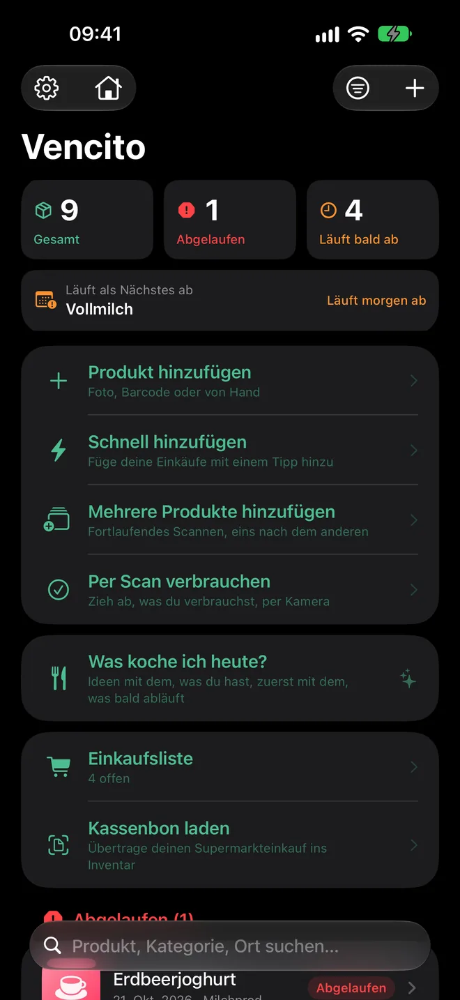
So funktioniert es
Vom Supermarktregal in deinen Kühlschrank, in drei Schritten
Foto machen
Von der Verpackung, mit sichtbarem Datum. Oder richte die Kamera live aus: Sie liest Barcode und Datum gleichzeitig. Du kannst weitere Fotos hinzufügen: Produkt, Barcode und Haltbarkeitsdatum.
Vencito ergänzt den Rest
Es liest das Datum, schlägt Name und Kategorie vor und sucht den Barcode bei Open Food Facts und dessen Datenbanken für Kosmetik und andere Produkte. Du prüfst und speicherst.
Rechtzeitig erinnert werden
Eine Benachrichtigung pro Tag, zur Uhrzeit deiner Wahl, mit dem, was bald abläuft: standardmäßig 30, 15, 7, 3 und 1 Tag vorher.
Hier ausprobieren
Gib ein, was auf der Verpackung steht
Das ist eine vereinfachte Version des Datumslesers der App. Er versteht die auf Verpackungen gedruckten Formate und bevorzugt das Haltbarkeitsdatum gegenüber dem Herstellungsdatum.
Haltbarkeitsdatum
—
—Funktionen
Gemacht für Vorratsschrank, Kühlschrank und Medikamentenschrank
Datumsleser
EXP 14/02/27, 25-08-2026, 25 AUG 2026, 08/2027, MHD 04/27… Er unterscheidet Haltbarkeits- von Herstellungsdatum und liest Verpackungen in sechs Sprachen.
Barcodes
Live-Scan oder aus dem Foto, mit EAN, UPC und QR. Open Food Facts (und dessen Datenbanken für Kosmetik und andere Produkte, etwa rezeptfreie Medikamente) füllt Name, Marke und Kategorie aus.
Was koche ich heute?
Rezepte mit dem, was du hast, beginnend mit dem, was bald abläuft. Ein eigener Katalog mit über 1.000 gängigen, einfachen Gerichten aus mehreren Ländern, mit Fotos und in deiner Sprache, für Frühstück, Snack, Mittag- und Abendessen, mit Kochmodus und gespeicherten Rezepten. Funktioniert offline.
Mehrere Haushalte
Verwalte die Produkte mehrerer Haushalte und wähle, welchen du sehen willst, oder sieh alle zusammen. Erinnerungen und Widget fassen die Daten aller Haushalte zusammen.
Einkaufsliste
Schreib auf, was du kaufen musst, füge mit einem Tipp hinzu, was einem Rezept fehlt, oder lass die App ergänzen, was dir ausgeht. Hake Gekauftes ab und teile die Liste als Text.
Viele hintereinander
Kontinuierlicher Scan: Barcode, Datum, fertig. Wird ein Datum nicht sicher gelesen, bittet dich die App, es vor dem Speichern zu bestätigen.
Schnell hinzufügen
Über hundert gängige Produkte mit Foto, um Eingekauftes mit einem Tipp hinzuzufügen: Milch, Eier, Brot, Obst … Es schlägt zuerst die vor, die du am häufigsten nutzt, und schätzt für jedes Produkt das Ablaufdatum.
Statistiken
Wie viel du verbraucht hast, welcher Anteil rechtzeitig, was du weggeworfen und was du in letzter Minute gerettet hast, mit deiner Serie ohne Verschwendung, einem Sechs-Monats-Diagramm und dem Vergleich mit dem Vorzeitraum. „Wegwerfen“ hält fest, was schlecht geworden ist; „Löschen“ korrigiert eine Fehleingabe.
Per Scan verbrauchen
Richte die Kamera auf Barcode oder QR-Code des verbrauchten Produkts und eine Einheit des Produkts mit dem frühesten Ablauf wird abgezogen. Weiter zum nächsten, ohne den Bildschirm zu berühren.
Kassenbon laden
Aus einem Foto (Kamera oder Galerie) oder einer PDF: liest die Zeilen, ignoriert Steuern und Zahlungen, schätzt das Ablaufdatum jedes Produkts und sucht, wenn der Bon den Barcode zeigt, den echten Namen.
Mit ChatGPT kochen
Teile bei einem Rezept Foto und Anweisungen mit einem Tippen: ChatGPT wählen, senden, Sprachmodus aktivieren, und es führt dich Schritt für Schritt durch, mit den gewählten Portionen.
Ohne Haltbarkeitsdatum
Für Dinge, die nicht ablaufen oder kein Datum haben: separat gespeichert, ohne Erinnerungen.
Live-Scan
In einem einzigen Bild liest er Barcode, Haltbarkeitsdatum und Produktnamen. Jeder Wert wird erst bestätigt, wenn er sich wiederholt, um unscharfe Fehllesungen zu vermeiden.
Mehrere Fotos pro Produkt
Bewahre ein Foto des Produkts, eines des Barcodes, eines des Haltbarkeitsdatums und beliebig viele weitere auf. Sie erscheinen in einer wischbaren Galerie.
Widgets
Auf dem Home-Bildschirm und dem Sperrbildschirm, mit dem, was als Nächstes abläuft. Tippe auf ein Produkt, um es in der App zu öffnen.
Status auf einen Blick
Abgelaufen, bald ablaufend und demnächst, mit einer Übersicht oben und einem Vorschaubild für jedes Produkt.
Wischen zum Verbrauchen
Wische, um eine Einheit zu verbrauchen oder das Produkt zu entfernen. Bei einem Fehler schüttelst du auf dem iPhone zum Rückgängigmachen oder tippst auf Android auf „Rückgängig“.
iPad und Tablets
Liste und Detail nebeneinander, in jeder Ausrichtung; auf dem iPad auch mit Multitasking und, mit Tastatur, fügt ⌘N ein Produkt hinzu. Auf Android-Tablets dieselbe Zwei-Spalten-Ansicht.
Sechs Sprachen
Spanisch, Englisch, Portugiesisch (Brasilien), Französisch, Italienisch und Deutsch. Sofort in den Einstellungen wechseln.
Barrierefrei
Funktioniert mit VoiceOver und großen Schriftgrößen. Jedes Produkt wird vollständig vorgelesen: Name, Status und Datum.
Video
Vencito in 30 Sekunden
Alles auf einen Blick, Live-Scan von Barcode und Datum und Rezepte mit dem, was du hast.
Das Video ist auf Englisch. Der gezeigte Scan ist eine anschauliche Simulation.
Rezepte
Ein Blick in den Katalog
Über 1.000 gängige, einfache Gerichte aus vielen Ländern, jedes mit eigenem Foto. Hier ein paar davon.

Schnitzel nach neapolitanischer Art
🇦🇷 · 40 min

Empanadas mit Fleisch aus dem Ofen
🇦🇷 · 55 min

Chivito
🇺🇾 · 25 min

Rote Chilaquiles
🇲🇽 · 25 min

Lomo saltado
🇵🇪 · 25 min

Pabellón criollo
🇻🇪 · 50 min

Arepas mit Käse
🇨🇴 · 25 min

Pastel de Choclo
🇨🇱 · 60 min

Tortilla de patatas
🇪🇸 · 35 min

Oyakodon
🇯🇵 · 25 min

Hähnchen-Souvlaki
🇬🇷 · 30 min

Chana Masala
🇮🇳 · 30 min

Ropa vieja
🇨🇺 · 60 min

Sopa paraguaya
🇵🇾 · 50 min

Mac and Cheese aus dem Topf
🇺🇸 · 30 min

Fluffige Pancakes
🇺🇸 · 20 min
Rezepte werden nach dem vorgeschlagen, was du hast und was zuerst abläuft.
Screenshots
Ein genauerer Blick
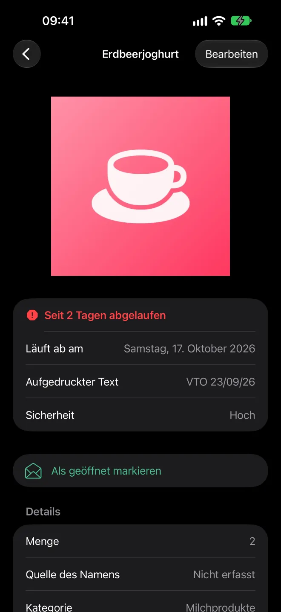
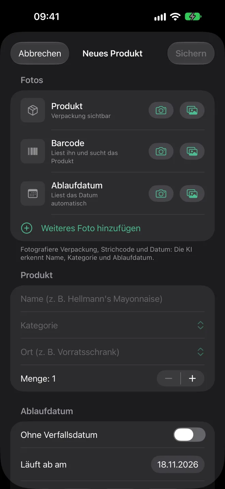
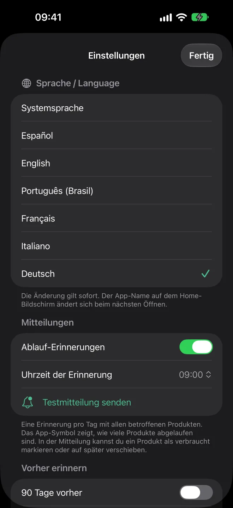
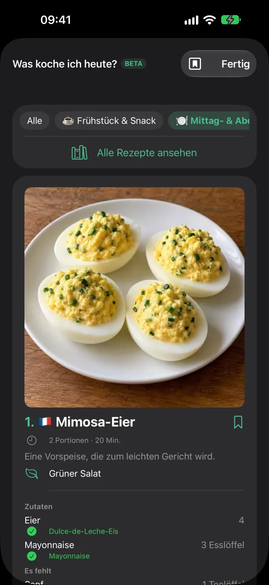
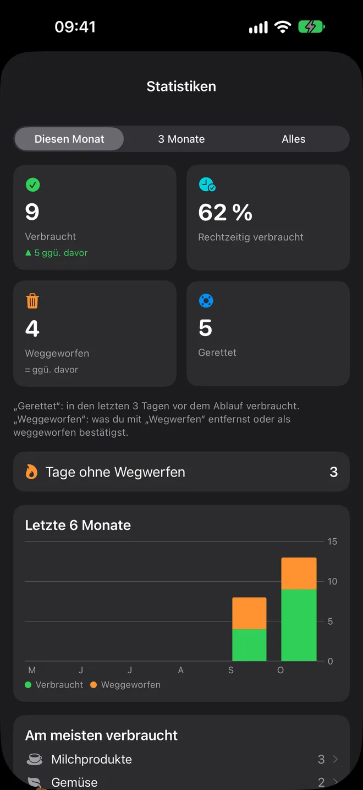
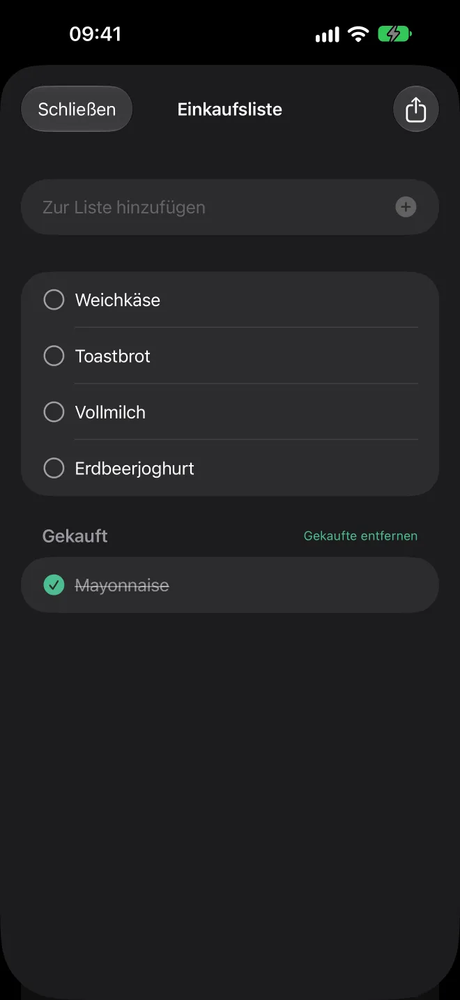
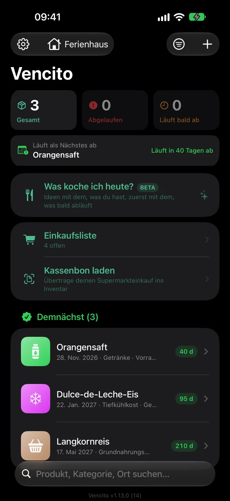
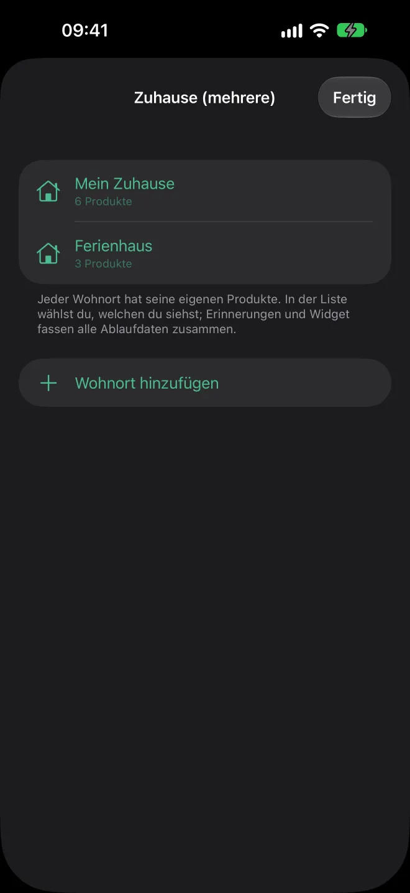
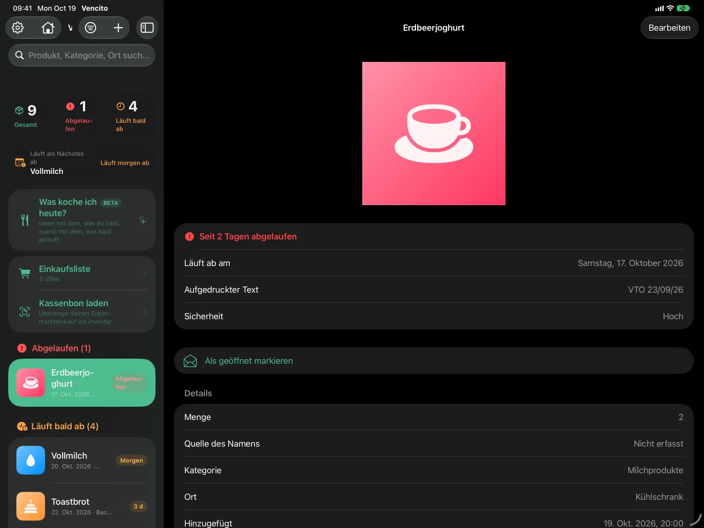
Auf dem iPad stehen Liste und Detail nebeneinander.
Android
Auch für Android
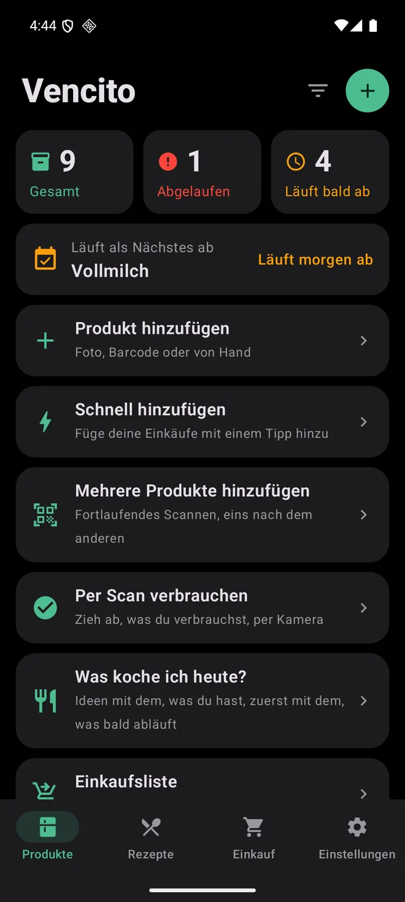
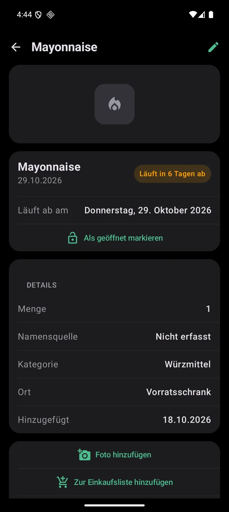
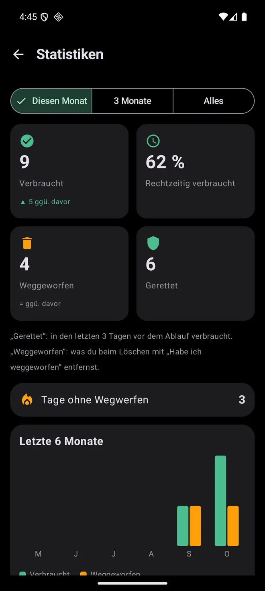
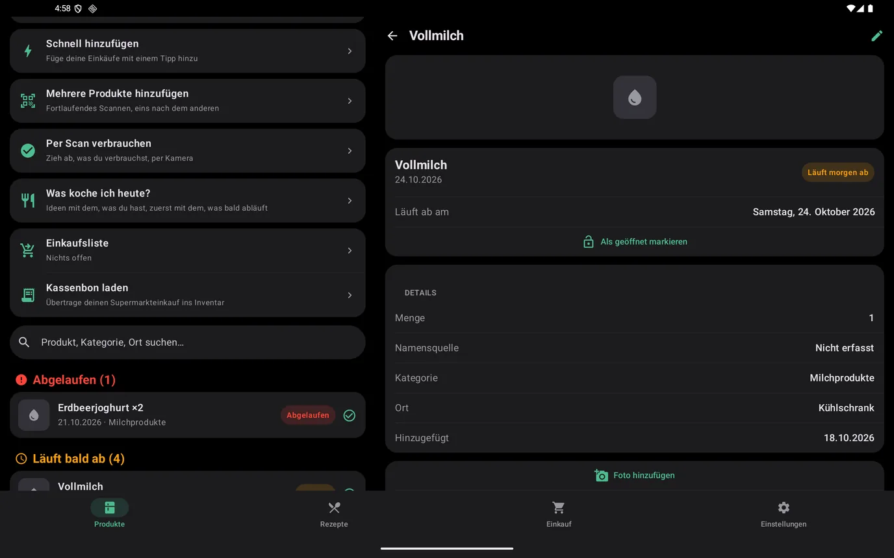
Auf Android-Tablets stehen Liste und Detail nebeneinander.
Datenschutz
Deine Daten bleiben auf deinem Telefon
Vencito hat keine Konten, keine eigenen Server, keine Analysen und keine Werbung.
Alles auf dem Gerät
Produkte, Fotos und Einstellungen werden auf deinem iPhone, iPad oder Android-Telefon gespeichert. Auf Apple-Geräten, wenn du die iCloud-Synchronisierung aktivierst, auch in deiner privaten iCloud (der Entwickler hat keinen Zugriff).
Auf dem Gerät gelesen
Text auf Fotos und Barcodes werden auf dem Gerät gelesen: mit der Erkennung von Apple auf iPhone und iPad und mit ML Kit von Google auf Android.
Ein einziges optionales Datum verlässt das Gerät
Für die Produktsuche wird nur die Barcode-Nummer an Open Food Facts und dessen Schwesterdatenbanken gesendet. Du kannst das ausschalten.
Lokale Erinnerungen
Benachrichtigungen plant das Telefon selbst. Sie laufen über keinen Server.
FAQ
Häufige Fragen
Was kostet es?
Es ist kostenlos, ohne gesperrte Funktionen.
Funktioniert es offline?
Ja. Nur die Produktsuche per Barcode braucht Internet.
Funktioniert es auf Android und auf Tablets?
Ja. Es gibt Versionen für iPhone, iPad und Android, auch für Tablets, mit denselben sechs Sprachen. Die Daten werden nicht zwischen iPhone und Android synchronisiert: Du überträgst sie, indem du in den Einstellungen eine Datei exportierst und importierst.
Kann ich meine Daten auf ein anderes Handy übertragen?
Ja. In den Einstellungen exportierst du eine Datei mit allen Produkten (mit oder ohne Fotos) und importierst sie auf einem anderen Gerät.
Was, wenn das Datum nur Monat und Jahr zeigt?
Die App verwendet den letzten Tag dieses Monats, so werden Verpackungen gelesen. Sie versteht sowohl 08/2027 als auch MHD 04/27.
Kann ich mehr als ein Foto pro Produkt aufbewahren?
Ja. Neben dem Hauptfoto kannst du eines vom Barcode, eines vom Haltbarkeitsdatum und bis zu 8 weitere hinzufügen. Wische auf dem Detailbildschirm durch sie; sie sind im Export enthalten.
Noch eine Frage oder ein Problem? Support kontaktieren.